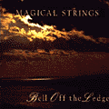

|

Bell Off the Ledge
This recording represents a musical leap for Magical Strings. While never losing sight of their roots in Celtic expression, this album takes on a more global, yet intimate, character, expressing moods from a poignant longing for Ireland from the coast of Maine, to memories of the infectious rhythms of an African kora player. Comprised mostly of original works with a few traditional pieces, the rich and sparkling sound of Philip and Pam's Celtic harps, hammered dulcimers and whistles are wonderfully enhances by the cello playing of Eugene Friesen (of the Paul Winter Consort), the percussion of Jarrod Kaplan, and the Irish fiddling of Randal Bayes.
The thirteen selections range from the orchestral sounds of Bell Off the Ledge and "The Everlasting Peace", to the haunting solos of the harp and Choroi flute on "Song of Love" and the Norwegian air. It dances from the Hungarian-sounding Welsh tune to the spirited lyrical Irish jigs and reels. Bell Off the Ledge will fill your soul with some of the finest music Magical Strings has ever recorded.
Here are several Bell Off the Ledge sound clips (mp3):
Mummer's Dance
Bell Off the Ledge (Title track)
Lament for Merlin
The Everlasting Peace
MP3 sound clips require a software mp3 player. If you don't
yet have one installed, you can download a freeware version, such
as RealOne
Player OR Microsoft
Media Player OR Winamp Player.
|
Recordings

Bell Off the
Ledge

Out of Print |